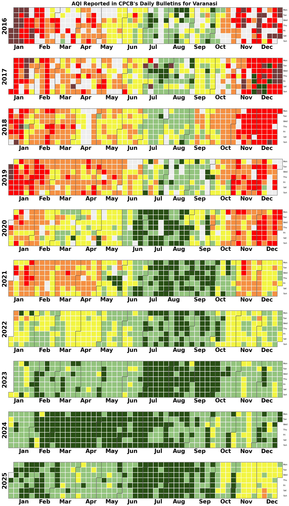

Show hidden code
!pip install calplotIn this tutorial, we’ll learn to plot calendar heatmap using a city’s AQI data. This data is obtained from CPCB’s AQI Bulletins. UrbanEmissions cleaned and made these bulletins data from 2015-25 accessible: AQI Bulletins Visualisation. To generate calendar heatmap, we will use the Python library calplot
!pip install calplotimport pandas as pd
import matplotlib.pyplot as plt
import numpy as np
from matplotlib.colors import ListedColormap
import calplotThe AQI Bulletins data has daily city average AQI reported for every city. We’ll produce the calendar heatmap for the city Varanasi.
df = pd.read_csv('data/AllIndiaBulletinsMaster2025_openrefined.csv')
df = df[df.city == 'Varanasi']
df['date'] = pd.to_datetime(df['date'])
df.head()| date | city | no_stations | aqi_category | aqi | prominent_pollutant | |
|---|---|---|---|---|---|---|
| 0 | 2015-05-01 | Varanasi | 0 | Moderate | 157 | PM10 |
| 17 | 2015-05-02 | Varanasi | 0 | Moderate | 156 | PM10 |
| 20 | 2015-05-03 | Varanasi | 0 | Poor | 211 | PM10 |
| 39 | 2015-05-04 | Varanasi | 0 | Poor | 227 | PM10 |
| 71 | 2015-05-08 | Varanasi | 0 | Poor | 213 | PM2.5 |
We can see that AQI data is missing on a few days. This is because atleast 16 hours of data is required for a station to calculate AQI. You can read more about it in our Calculating AQI tutorial.
To create a calendar heatmap, we’d need some value (including null) for every day of a calendar year. We thus create a template dataframe that has all dates of a calendar year. For days on which there is no reported AQI, we will take a null value. For Varanasi, we’ll plot data from the year 2016 to 2025.
# Create a dataframe with a single column - dates from 2015 to 2025
daily_dates = pd.date_range(start='2016-01-01', end='2025-12-31', freq='D')
template = pd.DataFrame({'date': daily_dates})
template.head()| date | |
|---|---|
| 0 | 2016-01-01 |
| 1 | 2016-01-02 |
| 2 | 2016-01-03 |
| 3 | 2016-01-04 |
| 4 | 2016-01-05 |
df = template.merge(df, on='date', how='left') #Remove this code if you dont want years without data in calendar
df.head()| date | city | no_stations | aqi_category | aqi | prominent_pollutant | |
|---|---|---|---|---|---|---|
| 0 | 2016-01-01 | Varanasi | 1.0 | Severe | 466.0 | PM2.5 |
| 1 | 2016-01-02 | Varanasi | 1.0 | Severe | 461.0 | PM2.5 |
| 2 | 2016-01-03 | Varanasi | 1.0 | Severe | 446.0 | PM2.5 |
| 3 | 2016-01-04 | Varanasi | 1.0 | Severe | 419.0 | PM2.5 |
| 4 | 2016-01-05 | Varanasi | 1.0 | Severe | 461.0 | PM2.5 |
df.set_index('date', inplace=True)
# Replace all NULLS with -1 (grey out on map)
df = df.fillna(-1)
df.head()| city | no_stations | aqi_category | aqi | prominent_pollutant | |
|---|---|---|---|---|---|
| date | |||||
| 2016-01-01 | Varanasi | 1.0 | Severe | 466.0 | PM2.5 |
| 2016-01-02 | Varanasi | 1.0 | Severe | 461.0 | PM2.5 |
| 2016-01-03 | Varanasi | 1.0 | Severe | 446.0 | PM2.5 |
| 2016-01-04 | Varanasi | 1.0 | Severe | 419.0 | PM2.5 |
| 2016-01-05 | Varanasi | 1.0 | Severe | 461.0 | PM2.5 |
We will use the official AQI color codings in the calendar heatmap. For which, we map each day’s AQI value to the required color.
# Define the colormap ranges and colors
aqi_ranges = [0, 50, 100, 200, 300, 400, 500]
aqi_colors = ['#eeeeeeff', # Null values are replaced with -1 - this color is for that - remove it if null calendary years are not needed
'#274e13ff', '#93c47dff', '#f2f542', '#f59042', '#ff0000', '#753b3b']# Define the conditions for each category
conditions = [
(df['aqi'] < 0), # Null values are replaced with -1 - this category is for that - remove it if null calendary years are not needed
(df['aqi'] <= 50),
(df['aqi'] > 50) & (df['aqi'] <= 100),
(df['aqi'] > 100) & (df['aqi'] <= 200),
(df['aqi'] > 200) & (df['aqi'] <= 300),
(df['aqi'] > 300) & (df['aqi'] <= 400),
(df['aqi'] > 400)
]categories = ['1', '2', '3', '4', '5', '6', '7'] #Should be 6 - +1 for the null value category.
df['AQI_cat'] = np.select(conditions, categories, default='outlier')
df['AQI_cat'] = df['AQI_cat'].astype(int)
df.head()| city | no_stations | aqi_category | aqi | prominent_pollutant | AQI_cat | |
|---|---|---|---|---|---|---|
| date | ||||||
| 2016-01-01 | Varanasi | 1.0 | Severe | 466.0 | PM2.5 | 7 |
| 2016-01-02 | Varanasi | 1.0 | Severe | 461.0 | PM2.5 | 7 |
| 2016-01-03 | Varanasi | 1.0 | Severe | 446.0 | PM2.5 | 7 |
| 2016-01-04 | Varanasi | 1.0 | Severe | 419.0 | PM2.5 | 7 |
| 2016-01-05 | Varanasi | 1.0 | Severe | 461.0 | PM2.5 | 7 |
aqi_colors = [aqi_colors[i-1] for i in sorted(df['AQI'].unique())]
aqi_colors['#eeeeeeff',
'#274e13ff',
'#93c47dff',
'#f2f542',
'#f59042',
'#ff0000',
'#753b3b']# Create a custom discrete colormap for AQI
cmap = ListedColormap(aqi_colors)#Fix height of image based on number of years of data
height = df.index.year.nunique() * 3.5
calplot.calplot(df['AQI_cat'],
yearascending = True,
colorbar = False, #Legend
yearlabels = True,
yearlabel_kws = {'fontsize': 30, 'color': 'black', 'fontname':'sans-serif'},
suptitle = "AQI Reported in CPCB's Daily Bulletins for Varanasi",
suptitle_kws = {'fontsize': 25, 'x': 0.5, 'y': 0.995, 'fontweight':'bold', 'fontname':'sans-serif'},
cmap=cmap,
linecolor = 'white', linewidth = 1,
edgecolor = 'black',
#textformat = '{:.0f}', textfiller = '-', textcolor = 'black'
figsize=(20,height)
)
##OPTIONAL FORMATTING
# Iterate over each subplot and set xtick labels to bold
for ax in plt.gcf().get_axes():
fontsize = 28
fontweight = 'bold'
fontproperties = {'weight' : fontweight, 'size' : fontsize}
ax.set_xticklabels(['Jan', 'Feb', 'Mar', 'Apr', 'May', 'Jun', 'Jul', 'Aug', 'Sep', 'Oct', 'Nov', 'Dec'], fontdict = fontproperties)
#ax.tick_params(axis="x", labelsize=28, weight='bold')
#plt.xticks(fontweight='bold', fontsize=28)
#plt.savefig('visuals/calendarheatmap.png')
plt.show()